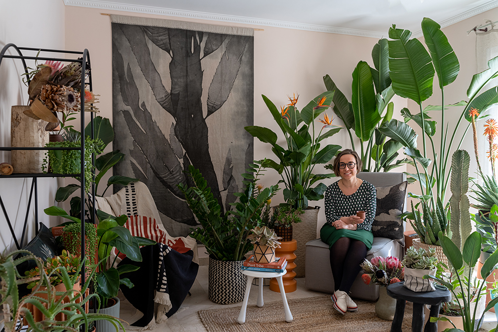

Houseplant Travel to South Africa
While there is hope and optimism on the horizon as the easing of lockdown approaches, there’s still uncertainty about the possibility of travelling abroad this year. According to the Amex Trend report, people are missing travel so much that it’s taking an emotional toll and impacting their wellbeing, with nearly half (48%) of respondents citing that not being able to travel makes them feel anxious and stressed. We partnered with The Joy of Plants for our latest project to reveal how you can transform your home with houseplants to immerse yourself in another country, even if you’re planning a staycation at home. The solution? Armchair travelling. The concept of armchair travel involves experiencing faraway places from the comfort of your own home – whether that’s reading a book, watching a documentary, or listening to the music from a particular country to immerse yourself in the sights and sounds without stepping a single foot outside your front door. With many restrictions still in place and no sign of them easing soon, we want to showcase the power of Houseplant Travel. Houseplant Travel involves embracing native houseplants from countries across the world and pairing them with signature interior design trends to transform a space in your home and transport you to the shores of a faraway destination. Creating two distinct and beautiful looks, Igor took inspiration from Brazil while Judith chose South Africa. We both authentically capture the flora and style of each country, with houseplants firmly in the spotlight. Let’s kick off with our second destination: South Africa!


What is a unique feature or quality of houseplants native to South Africa? JUDITH: When working on this project I realized there is such a big variety of plants that are native to South Africa: who would have thought that a String of Pearls originates from the same country as an Euphorbia ingens? I think their best quality is that South African plants are a good mix of very common and very exclusive plants: for example plants like a Kalanchoe rotundifolia or Zamioculcas zamiifolia are easy to find in most garden centers here in Europe, but then you have more special species like the ZZ black raven or the soft velvet-y Kalanchoe tomentosa. There is something for any plant lover! What is your top styling tip houseplants native to South Africa? JUDITH: Pair your plants with graphic and outspoken shapes, both in patterns on textiles and woven baskets, as well as in small furniture like stools and plant stands. Keep your colour palette limited to black and white/beige neutrals. Then let the orange hues of the handmade terracotta pots, and the bright orange Strelitzia and Aloe blooms add a vibrant pop of colour to your South African urban jungle


Can you tell us more about the look you have created? JUDITH: For this look inspired by South Africa, I turned our guestroom into a cozy lush jungle. A place where you can sit down, chat, read a book and enjoy being surrounded by all the different plants from South Africa. A comfortable place with beautiful textiles and natural materials like linen, jute and cotton and a lovely plant shelfie with some smaller plants and handmade terracotta items. What inspired you to choose South Africa? JUDITH: When I think of travel, I instantly think of lush plants like palms, banana trees and plants with big leaves like Strelitzia. Strelitzia is a genus of five species of perennial plants that are native to South Africa, so that was my starting part. Being born and raised in the Netherlands, hearing South African slang in Afrikaans always makes me smile. And then there is contemporary South African design: it’s such an interesting mix of graphic shapes and craftsmanship. Styling this cozy jungle made me want to travel to South Africa even more!